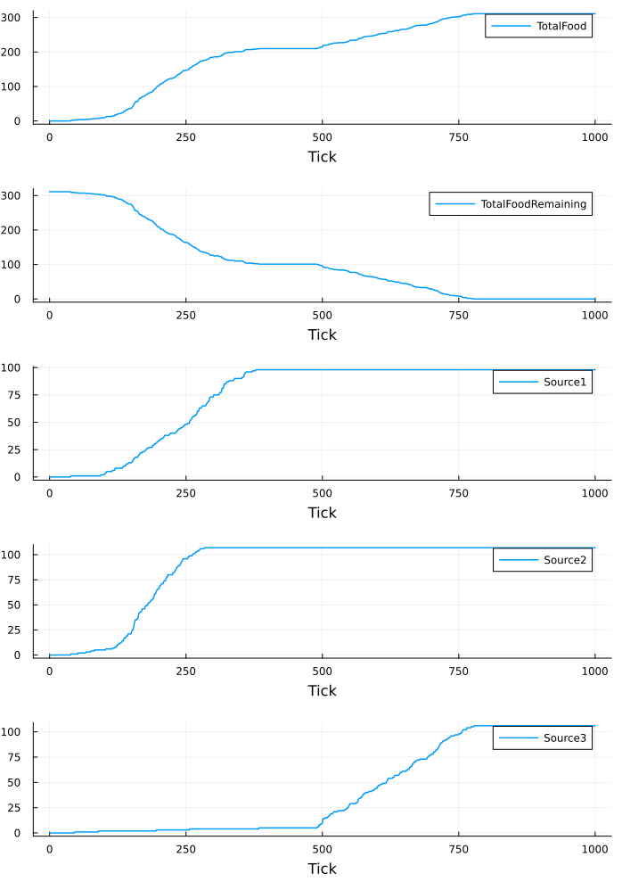
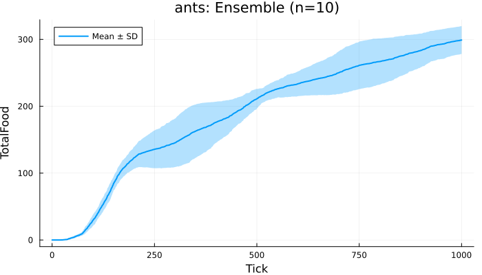
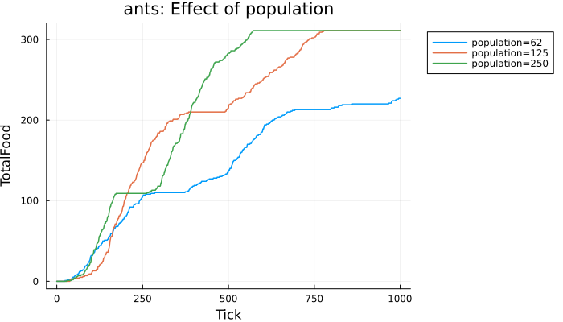

Ants
Overview
WHAT IS IT?
In this project, a colony of ants forages for food. Though each ant follows a set of simple rules, the colony as a whole acts in a sophisticated way.
HOW IT WORKS
When an ant finds a piece of food, it carries the food back to the nest, dropping a chemical as it moves. When other ants “sniff” the chemical, they follow the chemical toward the food. As more ants carry food to the nest, they reinforce the chemical trail.
THINGS TO NOTICE
The ant colony generally exploits the food source in order, starting with the food closest to the nest, and finishing with the food most distant from the nest. It is more difficult for the ants to form a stable trail to the more distant food, since the chemical trail has more time to evaporate and diffuse before being reinforced.
Once the colony finishes collecting the closest food, the chemical trail to that food naturally disappears, freeing up ants to help collect the other food sources. The more distant food sources require a larger “critical number” of ants to form a stable trail.
The consumption of the food is shown in a plot. The line colors in the plot match the colors of the food piles.
EXTENDING THE MODEL
Try different placements for the food sources. What happens if two food sources are equidistant from the nest? When that happens in the real world, ant colonies typically exploit one source then the other (not at the same time).
In this project, the ants use a “trick” to find their way back to the nest: they follow the “nest scent.” Real ants use a variety of different approaches to find their way back to the nest. Try to implement some alternative strategies.
The ants only respond to chemical levels between 0.05 and 2. The lower limit is used so the ants aren’t infinitely sensitive. Try removing the upper limit. What happens? Why?
In the uphill-chemical procedure, the ant “follows the gradient” of the chemical. That is, it “sniffs” in three directions, then turns in the direction where the chemical is strongest. You might want to try variants of the uphill-chemical procedure, changing the number and placement of “ant sniffs.”
NETLOGO FEATURES
The built-in diffuse primitive lets us diffuse the chemical easily without complicated code.
The primitive patch-right-and-ahead is used to make the ants smell in different directions without actually turning.
HOW TO CITE
If you mention this model or the NetLogo software in a publication, we ask that you include the citations below.
For the model itself:
- Wilensky, U. (1997). NetLogo Ants model. http://ccl.northwestern.edu/netlogo/models/Ants. Center for Connected Learning and Computer-Based Modeling, Northwestern University, Evanston, IL.
Please cite the NetLogo software as:
- Wilensky, U. (1999). NetLogo. http://ccl.northwestern.edu/netlogo/. Center for Connected Learning and Computer-Based Modeling, Northwestern University, Evanston, IL.
COPYRIGHT AND LICENSE
Copyright 1997 Uri Wilensky.

This model is licensed under the Creative Commons Attribution-NonCommercial-ShareAlike 3.0 License. To view a copy of this license, visit https://creativecommons.org/licenses/by-nc-sa/3.0/ or send a letter to Creative Commons, 559 Nathan Abbott Way, Stanford, California 94305, USA.
NetLogo itself is free software for non-commercial use under the terms of the GNU General Public License (see full license information here).
To inquire about commercial licenses for either NetLogo or specific models from the models library, please contact netlogo-commercial-admin@ccl.northwestern.edu.
This model was created as part of the project: CONNECTED MATHEMATICS: MAKING SENSE OF COMPLEX PHENOMENA THROUGH BUILDING OBJECT-BASED PARALLEL MODELS (OBPML). The project gratefully acknowledges the support of the National Science Foundation (Applications of Advanced Technologies Program) – grant numbers RED #9552950 and REC #9632612.
This model was developed at the MIT Media Lab using CM StarLogo. See Resnick, M. (1994) “Turtles, Termites and Traffic Jams: Explorations in Massively Parallel Microworlds.” Cambridge, MA: MIT Press. Adapted to StarLogoT, 1997, as part of the Connected Mathematics Project.
This model was converted to NetLogo as part of the projects: PARTICIPATORY SIMULATIONS: NETWORK-BASED DESIGN FOR SYSTEMS LEARNING IN CLASSROOMS and/or INTEGRATED SIMULATION AND MODELING ENVIRONMENT. The project gratefully acknowledges the support of the National Science Foundation (REPP & ROLE programs) – grant numbers REC #9814682 and REC-0126227. Converted from StarLogoT to NetLogo, 1998.
Parameters
| Parameter | Type | Default | Description |
|---|---|---|---|
population | Int | 125 | population |
diffusion_rate | Float64 | 50.0 | 0-99, percentage |
evaporation_rate | Float64 | 10.0 | 0-99, percentage |
grid_size | Int | 71 | width and height (odd for center nest) |
max_ticks | Int | 1000 | max ticks |
Source Code
The Julia code to run this model:
using ArkModelZoo
_, trajectory = run_ants()Time Series

Ensemble Runs
Ten replicates with different random seeds, showing mean ± standard deviation.

Parameter Sensitivity
Varying population.

Appendix: Source Code
This model is implemented in the Ark.jl Entity-Component-System (ECS) framework. The code is split into five files, each with a distinct role:
- Parameters: a mutable struct holding all configurable values.
- Components: lightweight data types attached to individual entities (agents).
- Resources: world-level shared state accessible to all systems.
- Systems: functions that operate on entities each tick, defining model behavior.
- Model: wiring that assembles the world, registers resources and systems, and provides the run entry point.
Parameters (parameters.jl)
The parameter struct uses @kwdef so that every field has a default value and can be overridden by keyword. These defaults match the original NetLogo model’s slider settings.
Base.@kwdef mutable struct AntsParams
population::Int = 125
diffusion_rate::Float64 = 50.0 # 0-99, percentage
evaporation_rate::Float64 = 10.0 # 0-99, percentage
grid_size::Int = 71 # width and height (odd for center nest)
max_ticks::Int = 1000
seed::Int = 42
endComponents (components.jl)
Components are lightweight data types attached to individual entities (agents). Mutable structs hold per-entity state, while empty tag structs act as markers for the ECS query system to efficiently filter entities.
# Ant position on continuous space mapped to grid
mutable struct AntPosition
x::Float64
y::Float64
end
AntPosition() = AntPosition(0.0, 0.0)
# Heading in degrees (0 = north, 90 = east)
mutable struct Heading
angle::Float64
end
Heading() = Heading(0.0)
# Tag: ant is carrying food
struct CarryingFood end
# Ant identity for staggered departure
mutable struct AntID
who::Int
end
AntID() = AntID(0)Resources (resources.jl)
Resources are world-level singletons shared across all systems, used for global state and aggregate statistics.
# Patch grid holds all per-cell state
mutable struct PatchGrid
width::Int
height::Int
chemical::Matrix{Float64} # pheromone level
food::Matrix{Int} # food amount (0, 1, or 2)
nest::Matrix{Bool} # true if nest area
nest_scent::Matrix{Float64} # gradient: higher closer to nest
food_source::Matrix{Int} # food source identifier (0, 1, 2, or 3)
end
function PatchGrid(width::Int, height::Int)
PatchGrid(
width, height,
zeros(Float64, width, height),
zeros(Int, width, height),
falses(width, height),
zeros(Float64, width, height),
zeros(Int, width, height),
)
end
mutable struct AntsStats
total_food_collected::Int
total_food_remaining::Int # sum of food on all patches (NetLogo's "total-food")
food_source1::Int
food_source2::Int
food_source3::Int
end
AntsStats() = AntsStats(0, 0, 0, 0, 0)Systems (systems.jl)
Systems contain the model logic and execute in a defined order each tick. Each system struct implements either initialize! (run once at setup) or update! (run every tick).
# --- Initialization ---
struct InitAntsSystem <: System end
function _setup_nest!(grid::PatchGrid)
cx = (grid.width + 1) ÷ 2
cy = (grid.height + 1) ÷ 2
for x in 1:grid.width, y in 1:grid.height
dist = sqrt(Float64((x - cx)^2 + (y - cy)^2))
grid.nest_scent[x, y] = max(0.0, 200.0 - dist)
if dist < 5.0
grid.nest[x, y] = true
end
end
end
function _setup_food!(grid::PatchGrid, rng)
cx = (grid.width + 1) ÷ 2
cy = (grid.height + 1) ÷ 2
max_r = (grid.width - 1) ÷ 2
# Three food sources at fixed relative positions
sources = [
(round(Int, cx + 0.6 * max_r), cy, 1),
(round(Int, cx - 0.6 * max_r), round(Int, cy - 0.6 * max_r), 2),
(round(Int, cx - 0.8 * max_r), round(Int, cy + 0.8 * max_r), 3),
]
for (sx, sy, src_id) in sources
for x in 1:grid.width, y in 1:grid.height
dist = sqrt(Float64((x - sx)^2 + (y - sy)^2))
if dist < 5.0
grid.food[x, y] = rand(rng, 1:2)
grid.food_source[x, y] = src_id
end
end
end
end
function initialize!(::InitAntsSystem, world::World)
params = get_resource(world, AntsParams)
rng = get_resource(world, RNGResource).rng
grid = get_resource(world, PatchGrid)
_setup_nest!(grid)
_setup_food!(grid, rng)
# Compute initial total food remaining
stats = get_resource(world, AntsStats)
total = 0
for x in 1:grid.width, y in 1:grid.height
total += grid.food[x, y]
end
stats.total_food_remaining = total
# Create ants at nest center
cx = Float64((grid.width + 1) ÷ 2)
cy = Float64((grid.height + 1) ÷ 2)
for i in 1:params.population
new_entity!(world, (
AntPosition(cx, cy),
Heading(rand(rng) * 360.0),
AntID(i),
))
end
return nothing
end
# --- Foraging Behavior ---
struct ForagingBehaviorSystem <: System
to_add_food::Vector{Entity} # ants that found food (add CarryingFood)
to_drop_food::Vector{Entity} # ants at nest (remove CarryingFood)
end
ForagingBehaviorSystem() = ForagingBehaviorSystem(Entity[], Entity[])
function _grid_xy(pos::AntPosition, grid::PatchGrid)
gx = clamp(round(Int, pos.x), 1, grid.width)
gy = clamp(round(Int, pos.y), 1, grid.height)
return gx, gy
end
function _scent_at_angle(pos::AntPosition, heading::Float64, offset::Float64,
grid::PatchGrid, field::Matrix{Float64})
θ = deg2rad(heading + offset)
nx = pos.x + sin(θ)
ny = pos.y + cos(θ)
gx = clamp(round(Int, nx), 1, grid.width)
gy = clamp(round(Int, ny), 1, grid.height)
return field[gx, gy]
end
function _uphill!(heading_comp::Heading, pos::AntPosition, grid::PatchGrid, field::Matrix{Float64})
ahead = _scent_at_angle(pos, heading_comp.angle, 0.0, grid, field)
right = _scent_at_angle(pos, heading_comp.angle, 45.0, grid, field)
left = _scent_at_angle(pos, heading_comp.angle, -45.0, grid, field)
if right > ahead || left > ahead
if right > left
heading_comp.angle += 45.0
else
heading_comp.angle -= 45.0
end
end
end
function update!(system::ForagingBehaviorSystem, world::World)
grid = get_resource(world, PatchGrid)
stats = get_resource(world, AntsStats)
tick_val = get_resource(world, Tick).tick
empty!(system.to_add_food)
empty!(system.to_drop_food)
# Ants NOT carrying food: look for food
for (eids, positions, headings, antids) in Query(world, (AntPosition, Heading, AntID); without=(CarryingFood,))
@inbounds for i in eachindex(positions)
antids[i].who >= tick_val && continue
gx, gy = _grid_xy(positions[i], grid)
if grid.food[gx, gy] > 0
grid.food[gx, gy] -= 1
stats.total_food_collected += 1
src = grid.food_source[gx, gy]
if src == 1; stats.food_source1 += 1
elseif src == 2; stats.food_source2 += 1
elseif src == 3; stats.food_source3 += 1
end
headings[i].angle += 180.0
push!(system.to_add_food, eids[i])
else
chem = grid.chemical[gx, gy]
if chem >= 0.05 && chem < 2.0
_uphill!(headings[i], positions[i], grid, grid.chemical)
end
end
end
end
# Ants carrying food: return to nest
for (eids, positions, headings) in Query(world, (AntPosition, Heading); with=(CarryingFood,))
@inbounds for i in eachindex(positions)
gx, gy = _grid_xy(positions[i], grid)
if grid.nest[gx, gy]
headings[i].angle += 180.0
push!(system.to_drop_food, eids[i])
else
grid.chemical[gx, gy] += 60.0
_uphill!(headings[i], positions[i], grid, grid.nest_scent)
end
end
end
# Apply deferred component changes outside query iteration
for e in system.to_add_food
add_components!(world, e, (CarryingFood(),))
end
for e in system.to_drop_food
remove_components!(world, e, (CarryingFood,))
end
return nothing
end
# --- Movement ---
struct AntMovementSystem <: System end
function update!(::AntMovementSystem, world::World)
rng = get_resource(world, RNGResource).rng
grid = get_resource(world, PatchGrid)
tick_val = get_resource(world, Tick).tick
w, h = grid.width, grid.height
for (_, positions, headings, antids) in Query(world, (AntPosition, Heading, AntID))
@inbounds for i in eachindex(positions)
antids[i].who >= tick_val && continue
# Wiggle: random ±40 degrees
headings[i].angle += rand(rng) * 40.0
headings[i].angle -= rand(rng) * 40.0
# Move forward 1
θ = deg2rad(headings[i].angle)
nx = positions[i].x + sin(θ)
ny = positions[i].y + cos(θ)
# Bounce off walls
if nx < 1.0 || nx > Float64(w) || ny < 1.0 || ny > Float64(h)
headings[i].angle += 180.0
θ = deg2rad(headings[i].angle)
nx = positions[i].x + sin(θ)
ny = positions[i].y + cos(θ)
end
positions[i].x = clamp(nx, 1.0, Float64(w))
positions[i].y = clamp(ny, 1.0, Float64(h))
end
end
return nothing
end
# --- Pheromone Diffusion & Evaporation ---
struct PheromoneSystem <: System
buffer::Matrix{Float64}
end
PheromoneSystem(grid_size::Int) = PheromoneSystem(zeros(Float64, grid_size, grid_size))
PheromoneSystem() = PheromoneSystem(0) # placeholder; re-created in init
function initialize!(system::PheromoneSystem, world::World)
# No-op; buffer allocated at construction
return nothing
end
function update!(system::PheromoneSystem, world::World)
params = get_resource(world, AntsParams)
grid = get_resource(world, PatchGrid)
w, h = grid.width, grid.height
chem = grid.chemical
buf = system.buffer
# Diffuse: each cell shares diffusion_rate% with 8 neighbors
diff_frac = params.diffusion_rate / 100.0
share = diff_frac / 8.0
# NetLogo diffuse: edge/corner patches keep shares meant for non-existent
# neighbors, preserving the global sum of chemical.
@inbounds for x in 1:w, y in 1:h
n_nbr = 0
for dx in -1:1, dy in -1:1
(dx == 0 && dy == 0) && continue
nx = x + dx
ny = y + dy
if nx >= 1 && nx <= w && ny >= 1 && ny <= h
n_nbr += 1
end
end
buf[x, y] = chem[x, y] * (1.0 - n_nbr * share)
end
@inbounds for x in 1:w, y in 1:h
contrib = chem[x, y] * share
contrib == 0.0 && continue
for dx in -1:1, dy in -1:1
(dx == 0 && dy == 0) && continue
nx = x + dx
ny = y + dy
(nx < 1 || nx > w || ny < 1 || ny > h) && continue
buf[nx, ny] += contrib
end
end
# Evaporate
retention = (100.0 - params.evaporation_rate) / 100.0
@inbounds for x in 1:w, y in 1:h
chem[x, y] = buf[x, y] * retention
end
return nothing
end
# --- Update Food Stats ---
struct UpdateFoodStatsSystem <: System end
function update!(::UpdateFoodStatsSystem, world::World)
grid = get_resource(world, PatchGrid)
stats = get_resource(world, AntsStats)
total = 0
@inbounds for x in 1:grid.width, y in 1:grid.height
total += grid.food[x, y]
end
stats.total_food_remaining = total
return nothing
end
# --- Termination ---
struct AntsTerminationSystem <: System end
function update!(::AntsTerminationSystem, world::World)
params = get_resource(world, AntsParams)
tick = get_resource(world, Tick)
if tick.tick + 1 >= params.max_ticks
get_resource(world, Terminate).stop = true
end
return nothing
endModel (model.jl)
The model file assembles all pieces: it creates the ECS World with the required component types, registers resources, builds the Scheduler with systems in execution order, and exposes the public run entry point. The observer pattern records the trajectory each tick.
function ants_world(; initial_capacity::Int = 1024)
return World(
AntPosition,
Heading,
AntID,
CarryingFood;
initial_capacity = initial_capacity,
allow_mutable = true,
)
end
function ants_systems(grid_size::Int = 71)
return (
InitAntsSystem(),
ForagingBehaviorSystem(),
AntMovementSystem(),
PheromoneSystem(grid_size),
UpdateFoodStatsSystem(),
AntsTerminationSystem(),
)
end
function ants_model(params::AntsParams = AntsParams())
world = ants_world()
_add_standard_resources!(world, params)
add_resource!(world, PatchGrid(params.grid_size, params.grid_size))
add_resource!(world, AntsStats())
scheduler = Scheduler(world, ants_systems(params.grid_size))
initialize!(scheduler)
return scheduler
end
struct AntsObserver end
function ants_headers(::AntsObserver)
return ["TotalFood", "TotalFoodRemaining", "Source1", "Source2", "Source3"]
end
function ants_values(::AntsObserver, world::World)
stats = get_resource(world, AntsStats)
return Float64[stats.total_food_collected, stats.total_food_remaining,
stats.food_source1, stats.food_source2, stats.food_source3]
end
function run_ants(; params::AntsParams = AntsParams(), observe::Bool = true)
return _run_model(ants_model, AntsObserver(), ants_values; params, observe)
end